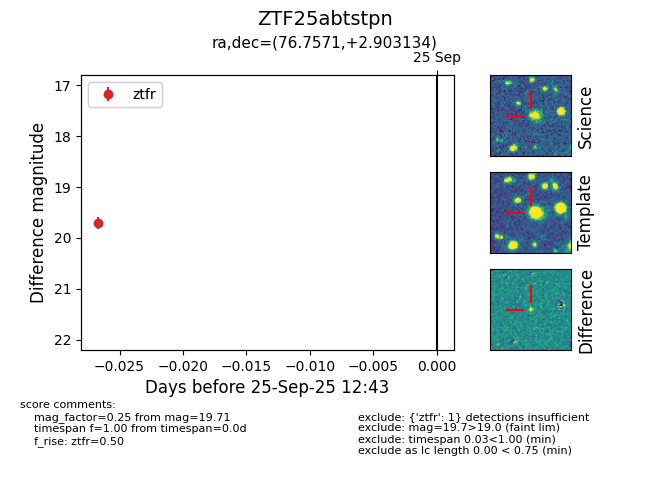

FINK: ZTF25abtstpn
Lasair: ZTF25abtstpn
ALeRCE: ZTF25abtstpn
ZTF25abtstpn (ztf,fink)
equatorial (ra, dec) = (76.7571,+2.90313)
galactic (l, b) = (197.6267,-21.59088)

last ztfr=19.71
1 ztfr detections